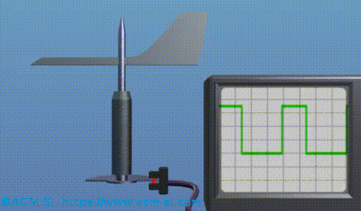

La direction du vent est détectée avec une girouette. Il existe plusieurs modèles de girouette par rapport à la mesure donnée et la façon de le donner. Certaines girouettes donnent un signal analogique (généralement une tension entre 0 et 10 V) proportionnel à l'angle par rapport à une référence donnée. D'autres incorporent un codeur angulaire avec une ligne de communication à travers laquelle ils mesurent cet angle directement sous forme numérique.
D'autres girouettes ont une structure plus simple et fournissent un signal numérique dont le cycle de fonctionnement correspond à "l'erreur d'orientation" entre une référence, donnée par sa base qui est fixe, et la palette elle-même.
Voir l'image animée suivante pour comprendre comment cela fonctionne.

Il a deux parties, une base fixée à la Nacelle, où il y a une source de lumière et un capteur de lumière, et une partie mobile, avec la liberté de tourner autour un axe perperndicular à la base et un secteur de disque opaque. La partie mobile est déplacée par le vent et génère des oscillations autour de l'axe. En fonction de la position relative du disque et de la base, le faisceau lumineux est interrompu ou non. La figure suivante montre la sortie du détecteur de lumière en fonction de cette position relative. Les signaux en bleu, rouge, vert et indido correspondent aux oscillations du disque, dans différentes positions.

La position de la girouette peut être vu dans Description de l'éolienne .